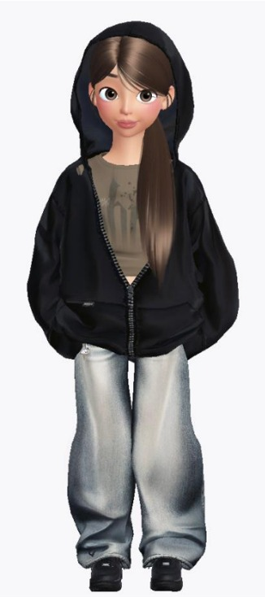
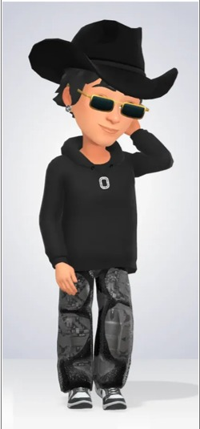
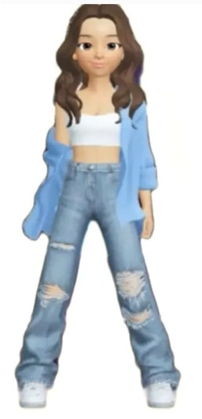

Descripcion
Es-Clothes es una plataforma que permite
a lo usuarios explorar la moda a su propio
ritmo. Los usuarios tienen la opcion de crear
y personalizar un avatar con el fin de experimentar
con diferentes estilos, guardar sus combinaciones en
un vestidor virtual y realizar compras directamente
desde las paginas web oficiales de las marcas. El proposito
de la aplicacion es fomentar la sustentabilidad y el compromiso
social, al mismo tiempo que ayuda a los usuarios a desarrollar
un estilo personal unico que refleja su identidad.
Avatar Empresariales

Laura Monzon (Gerente General)

Francisco Palacios (Gerente de Mercadeo)

Nicole Pardo (Gerente Financiero)
 ¡Nuevas formas de encontrar tu propio estilo!
¡Nuevas formas de encontrar tu propio estilo!
Quienes Somos
-
Filosofía Institucional
Es-Clothes es una empresa dedicada en la creación e innovación
de tecnologías disruptivas, orientadas al bienestar
y fortalecimiento de la autoestima en los adolescentes colombianos.
Es-Clothes, para el año 2029 será la App más utilizada y
reconocida a nivel Nacional por su impacto social en el
comportamiento de los jóvenes gracias a su implementación de
tecnologías dirigidas a problemas sociales que hoy en día
enfrentan los adolescentes.